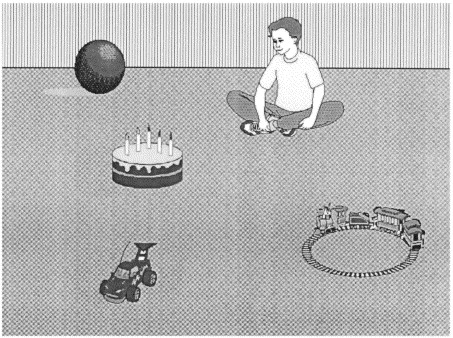
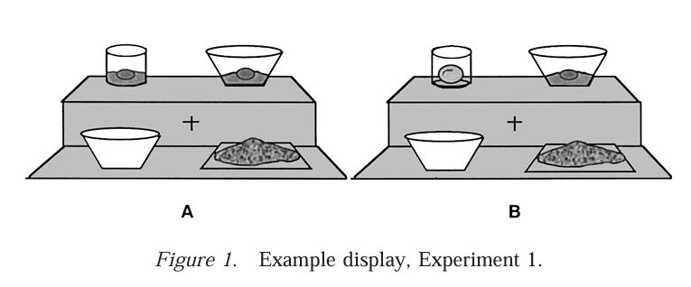
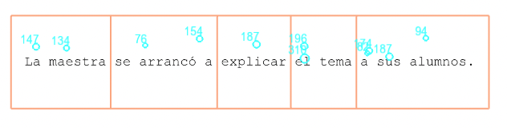

Visual World Paradigm
Welcome back!
Welcome
Any questions from yesterday?
Wooclap

Visual World Paradigm
Today’s plan
The Visual World Paradigm
- Introduction
- Basic set up
- Trial sequence
- Linking hypothesis
- Confounds
- Raw data
- Pipeline VWP data
Visual World Paradigm
The Visual World Paradigm (VWP) is an eye-tracking paradigm that commonly describes an experiment where auditory and visual stimuli are presented to a participant, with the goal of understanding how the former influences the latter around a scene.
Visual World Paradigm
Visual World Paradigm
Visual World Paradigm
- Exploring speech as it unfolds (i.e., time-locked)
- Or as it is produced (e.g., Meyer et al., 1998; Pistono & Hartsuiker, 2023)
- “Natural measure”
- As opposed to meta-linguistic judgements
- Combination of linguistic and non-linguistic information.
Visual World Paradigm
“While on a safari in Africa […] I noticed a hungry lion slowly moving through the tall grass toward a herd of grazing zebra”.
- Cooper’s (1974) method became later on popularised by Tanenhaus et al. (1995).
Cooper, 1974
Uses
Different levels of language comprehension (Huettig et al., 2011)
- Phonological level (e.g., Allopenna et al., 1998)
- Beetle versus beaker
- Lexical level (e.g., semantic prediction, Altmann & Kamide, 1999)
- Eat versus move
- Syntactic level (e.g., Knoeferle et al., 2005)
- Disambiguation of thematic roles.
- Discourse level (e.g., van Bergen & Bosker, 2018)
- Actually versus Indeed
- Pragmatic level (e.g., Grodner et al., 2010)
- Adjective informativeness depends on speaker’s reliability.
Uses
- Dialogue (e.g., Brown-Schmidt & Tanenhaus, 2008)
- Common ground establishment.
- Paralinguistic cues (e.g., Arnold et al., 2004)
- New versus given information following a disfluency.
- Linguistic relativity (e.g., Papafragou et al., 2008).
- Fixation preference following encoding of motion.
And many more (e.g., bilingualism, semantics/syntax interface,…)
Uses
Different populations
- Children
- Aphasic patients (e.g., Mirman et al., 2011)
- Non-native listeners (e.g., Ito et al., 2018)
Visual World Paradigm
Some (and possibly all) studies that use the Visual World Paradigm share the same logic.
Working example: Altmann and Kamide (1999)
- Brief summary of the paper?
Anticipation (~prediction) of lexical items given verb semantics.
Visual World Paradigm
What are the elements in Altmann and Kamide that you can identify as characteristic of the Visual World Paradigm?
- Auditory stimuli
- Visual stimuli
- Task
Design: “Auditory stimuli”
Example of Altmann and Kamide?
- The boy will eat the cake (constraining).
- The boy will move the cake (unconstraining).
Stimuli creation:
- Context matched.
- Counterbalancing.
- Comparison between levels.
- Inter alia.
Design: Friendly reminder
Comparison between levels.
-Need to have a baseline for comparison
Applies to design of auditory and/or visual stimuli
Changes in one measure are only meaningful when compared!
Design: “Auditory stimuli”
Variations in stimuli
- Fine-grained: Acoustic properties (e.g., duration, formant structure)
- Example of fine-grained: Dahan et al. (2001a), subcategorical mismatches:
- Manipulation: Target: net versus Competitors: neck and nep
- Properties of words (e.g., semantic features, frequency of occurrence)
- Example of lexical items: Dahan et al. (2001b), word frequency:
- Manipulation: High versus low-frequency targets
- Linguistic structure (e.g., syntactic structure, pragmatic properties)
- Example of linguistic structure: Knoerfele et al., (2005), thematic roles
- Manipulation: SVO v OVS
… As a function of your research question
- /! Note that those also map on the visual stimuli (i.e., what’s displayed on the screen)
Design: Auditory stimuli
Eye-movements in the VWP are time-locked.
- Time window of analysis around a critical part of speech e.g., critical word.
- Point-of-disambiguation
- Triggers (coding)
- Different time windows to explore different processes within speech comprehension.
- Integration versus Prediction (analysis)
- Time for the measure to occur.
Design: Auditory stimuli
What is the point of disambiguation in Altmann and Kamide (1999)?
Verb onset.
Design: Auditory stimuli
Participants listen to these sentences.
- Need to record our stimuli.
Tips:
- All recordings in one session.
- Talk to the person recording (to avoid monotonous voice).
- Sound-isolating recording studio.
- Several recordings of the same sentence.
- Consider cross-splicing.
- Editing tools: Audacity, Praat.
- Control speaker’s traits.
Design: Auditory stimuli
Can you think of other elements of audio that can serve as a time anchor?
- Prosodic contour.
- Case marking.
- Speech errors.
Design: Auditory stimuli
Can you think of other properties of audio that can be manipulated?
- Speech rate.
- Traits of the speaker.
- Prosody.
- Noise.
Design: Visual stimuli
Elements in Altmann and Kamide?

Design: Visual stimuli
Elements in Altmann and Kamide?
4: Target/reference (cake) and unrelated (ball, train, car).
- And the boy.
Design: Visual stimuli
Eye-movements in the VWP are space-locked: Areas of Interest.
Unrelated: Baseline for comparison
Target (or referent)
Unrelated 1
Unrelated 2
Unrelated 3
Design: Visual stimuli
AOIs need to be coded for analysis!
- Slightly bigger than the edges of the images
- Not too close to each other
- Not too close to the margins of the monitor (lower accuracy)
Design: Visual stimuli
- How many items can there be on display?
- How can items be displayed?
- How can we manipulate the items?
- How can we select images?
Design: Visual stimuli
- How many items can there be on display?
- [2, 5]
- Working memory (see Huettig et al., 2011)
Design: Visual stimuli
- How many items can there be on display?
Ferreira, Foucart and Engelhardt (2013)
Design: Visual stimuli
- How many items can there be on display?
Ferreira, Foucart and Engelhardt (2013)
Design: Visual stimuli
- How can items be displayed?
Properties of the display allow for exploration of different processes in speech comprehension.
- Semirealistic scenes: World knowledge.
- Arrays: Conceptual and lexical knowledge associated with individual words.
- Printed words: Phonological information and orthographic processing, comprehension of abstract words.
In turn, specific confounds to each.
Design: Visual stimuli
- How can items be displayed?


Design: Visual stimuli
- How can we manipulate the items?
Basic set up:
Target (or referent)
Unrelated 1
Unrelated 2
Unrelated 3
Design: Visual stimuli
- How can we manipulate the items?
Target versus competitors versus unrelated.
Relationship between target and competitors(s).
- Semantic distance, phonological distance, etc. - even shape!
- Target (critical word) might not even be present.
Different questions about language organisation and/or language-vision interations.
Design: Visual stimuli
- How can we manipulate the items?

Allopenna et al., 1998
Design: Visual stimuli
- How can we manipulate the items?
Allopenna et al., 1998
Design: Visual stimuli
- How can we manipulate the items?
Huettig & Altmann, 2005
Design: Visual stimuli
Fixations when there’s only the piano
Fixations when there’s only the trumpet
Fixations when both the piano and the trumpet are on display
Design: Visual stimuli
- How can we manipulate the items?
Target absent -> maximise competitor effects.
Huettig & McQueen, 2007; Target: beaker
Design: Visual stimuli
- How can we manipulate the items?
Object affordances: pour the egg.
Chambers et al., 2004
Design: Visual stimuli
- How can we manipulate the items?
Shared versus privileged perspective in interactive experiments.
Keysar et al., 2000
Design: Visual stimuli
- How can we select images?
Databases or create your own.
- Later case: Need for validation cf. confounds.
- Name agreement.
Tips:
- Control for visual salience.
- Control for size (coding).
- Familiarisation phase.
Design: Visual stimuli
Biases? Example: Anticipation of entities based on discourse markers
- Eye-tracking versus EEG
- van Bergen & Bosker (2018): Prediction of upcoming items following indeed/actually
- EEG follow-up study by Rasenberg et al. (2020)
- No support for prediction in N400 based on discourse markers
Task
As a function of your research question.
- Direct action
- Look and listen
But also:
- Perform a concurrent task? (impair WM)
- Interpretation of speech?
Remember: the active viewer (Yarbus).
Task
- Look and listen: Good subject effects?
- Mishra et al., 2013: language-mediated fixations are overlearnt, semi-automatic behaviour.
- Brothers et al., 2017: role of instructions, EEG.
Design: Exercise
Ito et al. (2018)
Example audio: The lady will fold/find the scarf.
What is the time window of analysis?
What are the AOIs?
What does the graph show?
Design: Exercise
Let’s brainstorm! RQ, design?
Structure
Structure
Before the experiment begins
Calibration and validation.
- Number of elements for interest areas.
- Size of interest areas.
- Horizontal and vertical areas.
Decide sample rate.
Structure
Drift correction
- Ensure accuracy.
- Where?
- Middle (no bias for an image beforehand).
- When?
- Beginning of every trial/block.
Preview window
- Very specific to the VWP
- Presentation of visual stimuli without auditory stimuli, so that participants can inspect the visual scene.
- Most common critique of the VWP.
Preview window
Why do you think it is a critique?
- Prenaming of objects
- Locate objects in space
Preview window
Pros and cons of preview window: Huettig & McQueen, 2007
Exp 1: Images at sentence onset v Exp 2: Images at 200 ms prior to target onset
Preview window
Pros and cons of preview window: Chen & Mirman (2015) for semantics
Preview window
Pros and cons of preview window: Allison et al. (2025), visual cognitive load
Preview window
Pros and cons of preview window: Apfelbaum et al. (2021)
Preview window
Pros and cons of preview window: Apfelbaum et al. (2021)
Preview window
Length? Form?
- Previous research e.g., 2000 ms, 1000 ms from target onset, etc.
- 750 - 1500 (Chen & Mirman, 2015)
- Level of interest e.g., phonological activation versus semantic activation.
Audio presentation
- Send triggers for audio.
- Give enough time for a measure to occur.
- Altmann and Kamide: Trigger -> verb onset.
Measures
Fixations and saccades.
- When & where
- Operationalisation
- Fixation counts, proportion on AOIs, saccadic latency…
- NB PFE for pupillometry.
- 100-200 ms to launch a saccade (Matin et al., 1993)
- Time course v average (more on day 5).
Measures
Example: Predicting a word following verb semantics, what is of interest:
- TW from sentence onset
- TW from verb onset
- TW from noun onset
Analysis
As a trailer of what we’ll see on Friday
- Analysis of fixations on average versus time-window
- Average: Collapse samples before and after an event & compare.
- Time-window: Time binning, changes in fixations per each time group.
Analysis
More on Friday
Divide in approaches (see Ito & Knoeferle, 2023):
Linear
- (G)LMM/ANOVAs by subjects & items/t-tests
There is an increase or a decrease over time. Cannot tell when this increase/decrease happens, but (G)LMMs are the most common analysis.
- but cf. models per time interval.
Non-linear
- Growth Curve Analysis, cluster analysis, Generalised Additive Mixed Models, BOLTS…
How this increase/decrease over time occurs. Some can assess when the differences in conditions become statistically significant.
Measures: Exercise
Let’s brainstorm! What would you look at for your RQ?
Measures: Linking hypothesis
Linking hypothesis: Link response to a hypothesized process.
- Eye movements reflect lexical access.
- (In reading) Time spent looking at a word == how long it takes to process it.
Visual World Parading = Linguistic + non-linguistic information.
- What guides what? Whether and how do they interact? What triggers an attentional shift?
- How can we be sure that our results eye-movements were linguistically mediated?
- What do you think drives eye-movements in the Visual World Paradigm?
Measures: Linking hypothesis
“Default”: Increases in fixation == increases in activation.
- Automatised routines; recognising a name triggers these routines, in turn, these routines trigger a saccade and thus fixations on objects (Tanenhaus et al., 2000).
Measures: Linking hypothesis
Do you think there is a caveat to this assumption? Why yes/no? Why do we care?
Measures: Linking hypothesis
In fact, a still ongoing discussion…
Caveats (see Magnuson, 2019):
- There are saccades based on partial information.
- There are fixations on elements that share properties with the target.
- There are fixations on a target before it’s encountered in the signal.
- Some manipulations reduce fixations.
Measures: Linking hypothesis
From Magnuson (2019):
- Language processing guiding vision (e.g., Allopenna et al., 1998).
- “Hidden competitors”
- Vision also affecting language processing (e.g. Huettig & McQueen, 2007).
- “Pre-naming”
- Listeners getting ahead of speech (e.g., Altmann & Kamide, 1999).
- Mental world.
- Common representational substrate (Altmann & Mirković, 2009)
- Just-in-time.
- Bilateral interaction depending on the task.
See also McMurray (2023)
Measures: Linking hypothesis
But why do we care?
- Role of preview window
- Activation of phonological and semantic information
- Bottom-up versus top-down effects
- Passive versus active processes (e.g., Pickering & Gambi’s (2018) prediction-by-production)
- Proper interpretation of results.
Confounds
Given your knowledge in linguistics & what we’ve discussed, what should we keep in mind when creating a VWP experiment?
Confounds
Image presentation.
- Salience
Confounds
Image presentation
- Name agreement
- Population
- Clarity

Confounds
Image presentation
- Size & quality
- Counterbalance position
- Luminance, contrast, etc. (pupillometry)
Confounds
Image relationship
- Semantic distance
- Phonological overlap
- Lexical properties e.g., frequency.
Confounds
Audio properties
- Same/different voices
- If AI-generated: Uncanny valley?
- Phonetic cues (e.g., co-articulation)
- Cross-splicing audios
- Volume
- Prosody
- Accent
Confounds
Audio properties
- Speech rate (in interaction with preview window)

Huettig & Guerra, 2019
Confounds: Exercise
Let’s brainstorm! What could potential confounds be in your study?
Side note: Reporting
At least:
- Position of items on the screen (and whether their position was counterbalanced)
- Size of the images
- Color of the images
- Database of images
- What was controlled for (e.g., frequency, match for name familiarity) & where these values were obtained from
- Time-window of analysis (but cf. the analysis section day)
- If audio was edited, how & software
- In some cases, a spectrogram is reported
- Task
- Length of preview window
Pros & cons
Pros
- Ecological validity.
- Relatively easy.
- Accessible e.g., no meta-linguistic judgements.
Cons
- Ecological validity.
- Confounding variables.
- Linking hypothesis.
Variations
Preferential look paradigm/Head-turn preference (~ VWP for infants)
- Different tracker
- Stimuli presentation
- What is discourse-old versus difficult.
- Messier data, fewer trials
Example of a lab protocol: Stone & Bosworth (2017)

Variations
Language production.
- No auditory stimuli
- Participants are asked to describe what they see
- Instructions
Variations
- The link between planning and eye movements is less direct.
- Division of labour in speech production (e.g., Levelt’s model)
- Conceptual
- Formulation
- Articulation
- How does looking at an object relate to production stages?
- Do people fixate for longer on objects harder to retrieve?
- Do people start producing speech prior to fixating on the object to name?
Variations
Language production.
- A direct fixation is not necessary to identify an object or when producing a label.
- Speakers tend to look at the next object they will name before they name it.
Variations
Language production.
- Only images.
- Time-locked to voice onset/offset.
- Manipulations: Image degradation, word frequency, etc.
- Relation to the level of interest.
- Network task
Variations
Mouse-tracking e.g., King et al., 2019
- Same logic as eye-tracking: track x,y coordinates every X ms (bounded by refresh rate)
- Motor movements taken to reflect mental trajectories (Spivey et al., 2004).
- See Spivey (2025) as well.
- Can be run online (less costly, e.g., large-scale experiments; wider audience e.g., clinical groups).
- Participant instructions.
Variations
Example: Li et al. (2025)
Set up
Variations
Example: Li et al. (2025)
Trial sequence
Variations
Example: Li et al. (2025)
Variations
Webcam tracking e.g., Slim & Hartsuiker, 2023 - ROIs size - Display size
Slim & Hartsuiker, 2023
Variations
Webcam tracking: James et al. (2025)
James et al., 2025
Variations
Webcam tracking: James et al. (2025)

Variations
Given the topics we’ve covered so far, what do you think is important to bear in mind?
- Think of accuracy & areas of interest
- Think of timing
- Think of calibration & validation
Variations
Webcam tracking: James et al. (2025)
James et al., 2025
Variations
Webcam tracking: Considerations from James et al. (2025)
- Relatively large areas of interest
- Good calibration -> Exclusion criteria
- Targeted interventions: head distance, poor lighting
- Power and effect sizes
- Synchronization of multiple clocks
- Communicate with participants e.g., how to improve calibration and validation
Raw data & pre-processing
Raw data
The eye-tracker is actually just recording gaze coordinates on the screen (i.e., gaze points) as well as timestamps in each interval (defined by the sampling rate).
It also includes:
- Timestamps for stimuli on- and offsets (i.e., the triggers/messages we sent).
- Timestamps for participants’ responses.
- What they responded.
- Trial information.
Raw data
ASCIII files
- Sampling rate
- x,y coordinates of gaze

Data Viewer
EDF files
- Conversion of ASCIII files.


Data Viewer
EDF files
- List of all participants and trials from each participant.
- List of all events pertaining to each trial.

Data Viewer
Please open the two datasets.
Note that because you are using the demo version, you can only open up to 5 trials per participant, and up to 50 events. Mariia and I have created datasets bearing these issues in mind, but data will look bigger when we show it in class because we have a licensed version.
Pre-processing
Software
Licensed software
- User-friendly, no need to code.
- A function of your eye-tracker.
- Data Viewer - EyeLink (SR Research)
- Tobii Pro Studio/Lab - Tobii
- BeGaze - SMI
Open software
- MATLAB, Python, R packages.
- gazeR, eyetrackingR
Data processing
All steps:
- Pre-process data
- Export data
- Visualization & data wrangling
- Analysis
Data processing
Today:
- Pre-process data
- Export data for analysis
- Visualization & data wrangling
- Analysis
Data pre-processing
- Import data into software
- Assess data
- Checks
- (Automatized) cleaning
- Prepare data for analysis & export
- Time windows
- Areas of Interest
Import data
Different software = different data files.
- Data Viewer: .edf files
- R packages: ASCIII files; reports from DV
Different software = additional steps.
- R packages: binning, assigning AIs…
Assess data
Two aspects:
- Pre-processing due to eye movements.
- Short/long fixations, track loss.
- Pre-processing due to participants.
- Missed trials, participation criteria.
Assess data
~ Sanity check (!= visualization)
- Does everything make sense?
- Is there anything missing?
- Trial-by-trial visual check
Assess data
Unusable participants
- Rare
- File corrupted?
- Lab log
- Example: A participant blinked too much during the experiment, too many unusable trials.
- If large data loss, it may be easier to exclude the participant.
Assess data
Unusable trials
- More common
- Poor calibration (cf. drift correction)?
- Umbrella term: “track loss” (could mean anything: participant sneezed, distraction, too fast)
- Field-specific
- Lab log!
Assess data
Common sense + lab log
- Remove participants (lab log? other exclusion criteria?)
- Items to discard
- Misunderstood sentences?
- Unforeseen confounds?
Cleaning
- Keep a log of all changes (trial & participant exclusion)
- Especially if you did not save the viewing session.
- Write up e.g., % trials removed.
Try to think ahead (pre-registration!) and report all your steps and motivation.

Exporting
Prepare data to be analysed elsewhere (e.g., R, SPSS).
Data Viewer has different reports.
Visual World Paradigm pipeline
Visual World Paradigm pipeline
Spoiler: No standardisation of a pre-processing pipeline


Visual World Paradigm pipeline
Example: eyetrackingR package
VWP: Assess data
- Are triggers there?
- And with the correct timing?*
- Are IAs there?
- And with the correct labels?
VWP: Assess data
Fixations etc. across the screen (both in defined AIs and elsewhere).
- What do we look for?
- ~ Subjective decisions, e.g., not looking ~ not processing speech
- Individual differences, e.g., different strategies (L1 v L2)
- Inspect trials with unusual behaviour for that participant?
VWP: Assess data
Let’s explore the datasets for class.
VWP: Assess data
Track loss
- Trial report: AVERAGE_BLINK_DURATION, BLINK_DURATION, IP_DURATION
- Proportion of track loss computed as: (AVERAGE_BLINK_DURATION * BLINK_COUNT) / IP_DURATION
- But this will also include blinks!
- Not common to encounter this step in reports.
- Kids vs. adults
- Other software will have implemented it differently
VWP: Pre-process data
Fixations, saccades.
- (Short and too long) fixations and blinks.
- Merge nearby fixations (thresholds)?
- Merge fixations separated by blink?
- A blink can interrupt a fixation and make it look like two.
- Consult literature!
- Again, no standard procedure.
VWP: Pre-process data
Fixations across time : Time window of analysis defined by triggers
Triggers, e.g., target_onset - target_offset
- Make sure your AIs are displayed when setting TW.
- Preferences > Data Filters > Show AIs
- What if there is a time-out?
- Strict Event Matching unchecked, Offset message blank
- Several TWs possible
- Different reports when exporting
- Launching a saccade takes ± 200 ms
- Change Start Event Offset, End Event Offset
- Consult previous literature!
VWP: Pre-process data
Fixations across time: How do we group those fixations?
- Time bins
- Segment the time course into groups of X ms with Y number of samples per ms
- Finer analysis of time course
- Sampling frequency
VWP: Pre-process data
Recap: sampling rate of X Hz = X number of samples per second.
Higher sample rate, less space between samples.
1000 Hz is a 1000 sample (one per ms). We can create a bin of 20 ms, that comprises 20 samples.
500 Hz would yield 10 samples in a 20 ms bin.
Sampling rate also limits the size of our bins!
- If we gather a sample every 25 ms (i.e., tracking at 40 Hz, 1000/40), we cannot make 20 ms bins.
In Data Viewer = Time binning report
VWP: Time binning report
- Time binning report: Only samples on AIs, or also including on-screen samples that are not on AIs?
- Trade-off.
- Affects how proportions are calculated.
- But counts are still there.
Familiarity with previous literature is key.
VWP: Time binning report
What does each mean?
- Across All Samples: Number of samples in each IA/Total number of samples per bin
- Across All On-Screen Samples (both defined and undefined): Number of samples in each IA/Sum of samples where fixations landed on IAs and Null interest area1.
- Across All Samples Assigned to Predefined Interest Areas Only: Number of samples in each IA/Sum of samples where fixations landed on IAs.
VWP: Time binning report
What does this really mean?
Assuming that we have 200 samples in a bin:
But 15 are blinks, 30 off-screen events, and 5 are data excluded.
There are 50 samples in uncoded areas of interest (i.e., IA 0)
There are 10 samples with data for IA 1.
In the All Samples report:
- The proportion of samples related to IA 1 is 5% (10/200)
In the All On-Screen Samples:
- The proportion of samples related to IA 1 is 6.7% (10/(200 - 30 - 15 - 5))
In All Interest Area Samples:
- The proportion of samples related to IA 1 is 10% (10/(200 - 30 - 15 - 5 - 50))
:::notes offscreen -> samples that fall outside of the displau boundary
VWP: Time binning report
- All On-Screen
- Overall increased attention towards the images.
- All Interest Area Samples
- IA_0 = track loss (trade-off).
VWP: Time binning report
IA_0
- Interesting when exploring some RQs (i.e., do people prefer to not fixate on anything?)
- However! You don’t know where exactly they were looking at (only that it was not defined!)
VWP: Time binning report
What do we count as samples for analysis?
- All Samples in Fixations and Saccades
- Exclude Samples during Saccades
- Exclude Samples during Saccades and Exclude Bins that Contain Non-Fixation Samples
No straight-forward answer. Things to consider:
- Fixations and Saccades:
- Only fixations: Proportions more ‘true’ to fixation behaviour but also less ‘true’ to actual behaviour.
- Only bins with fixations: Loss of data.
VWP: Exporting
Time binning report
- Choose variables (or just export all)
- Define the size of your bin
- On-screen events only (unless you want that information)
- E.g., samples in fixations and saccades
- Separate report unchecked

VWP: Output
Time binning report
Participant ID (RECORDING_SESSION_LABEL), trial number (TRIAL_LABEL/INDEX) (added automatically by Data Viewer) +
BIN_INDEX: Which bin it is. This will help us figure out time (by taking the bin number and multiplying it by the size of your time bin, but you can also use ‘BIN_START_TIME’).

VWP: Output
Time binning report
Non-eye movement related variables that we need, i.e., most (except participant ID & trial number) variables that you coded yourself (can be found at the end of the list in blue).
VWP: Output
Time binning report
Variables of interest when looking at fixations: you have duplicated columns per eye. Since you’ll most likely do monocular tracking, you’ll only need one set.
Information duplicated per Interest Area. If you have two visuals, then two; three visuals, then three, and so on (IA_x & Information duplicated per eye). Even if it was monocular recording, it preserves columns for each eye.
- IA_1_ID, IA_2_ID and so on: The label of the item that was presented in that region (target/distractor).
- BIN_SAMPLE_COUNT: The number of samples per bin.
- RIGHT_BLINK_SAMPLE_COUNT: Number of samples in a given bin that were a blink.
VWP: Output
Time binning report
- RIGHT_IA_1_SAMPLE_COUNT, RIGHT_IA_2_SAMPLE_COUNT and so on1: The number of fixations that fell in that area per bin (out of the number of samples per bin, i.e., if each bin has 10 samples, then it’s out of ten).
- RIGHT_IA_1_SAMPLE_COUNT_%, RIGHT_IA_2_SAMPLE_COUNT_% and so on: The proportion of fixations that fell in that area (i.e., a transformation of count).
VWP: Output
.txt → import in Excel and save as .xlsx or .csv
VWP: Reporting
Data preparation:
- Number of participants/trials lost to reasons other than eye movements (e.g., % of wrong answers on comprehension questions)
- What constitutes a sample e.g., with or without saccades
- How samples were calculated e.g., only on areas of interest, or the whole display
- How many samples per bin
- How many ms per bin
- Time window of analysis
Exercises
DB1 & DB2
- Explore the datasets & discuss if there is any anomaly
- Export the dataset
For tomorrow
Tomorrow Mariia will discuss eye-tracking-while-reading.
- Read Juhasz & Sheridan (2020) and/or Howard et al. (2017)
- Download the datasets for reading
References
Allison, C., Huettig, F., Fernandez, L., & Lachmann, T. (2025). Visuospatial working memory load reduces semantic prediction in the visual world. Language, Cognition and Neuroscience, 1-10.
Allopenna, P. D., Magnuson, J. S., & Tanenhaus, M. K. (1998). Tracking the time course of spoken word recognition using eye movements: Evidence for continuous mapping models. Journal of memory and language, 38(4), 419-439.
Altmann, G. T., & Kamide, Y. (1999). Incremental interpretation at verbs: Restricting the domain of subsequent reference. Cognition, 73(3), 247-264.
Altmann, G. T., & Mirković, J. (2009). Incrementality and prediction in human sentence processing. Cognitive science, 33(4), 583-609.
Apfelbaum, K. S., Klein-Packard, J., & McMurray, B. (2021). The pictures who shall not be named: Empirical support for benefits of preview in the Visual World Paradigm. Journal of memory and language, 121, 104279.
Arantzeta, M., Bastiaanse, R., Burchert, F., Wieling, M., Martinez-Zabaleta, M., & Laka, I. (2017). Eye-tracking the effect of word order in sentence comprehension in aphasia: Evidence from Basque, a free word order ergative language. Language, Cognition and Neuroscience, 32(10), 1320-1343.
References
Arnold, J. E., Kam, C. L. H., & Tanenhaus, M. K. (2007). If you say thee uh you are describing something hard: the on-line attribution of disfluency during reference comprehension. Journal of Experimental Psychology: Learning, Memory, and Cognition, 33(5), 914.
Brothers, T., Swaab, T. Y., & Traxler, M. J. (2017). Goals and strategies influence lexical prediction during sentence comprehension. Journal of memory and language, 93, 203-216.
Brown‐Schmidt, S., & Tanenhaus, M. K. (2008). Real‐time investigation of referential domains in unscripted conversation: A targeted language game approach. Cognitive science, 32(4), 643-684.
Chambers, C. G., Tanenhaus, M. K., & Magnuson, J. S. (2004). Actions and affordances in syntactic ambiguity resolution. Journal of experimental psychology: Learning, memory, and cognition, 30(3), 687.
Chen, Q., & Mirman, D. (2015). Interaction between phonological and semantic representations: Time matters. Cognitive science, 39(3), 538-558.
Cooper, R. M. (1974). The control of eye fixation by the meaning of spoken language: a new methodology for the real-time investigation of speech perception, memory, and language processing. Cognitive psychology.
Dahan, D., Magnuson, J. S., Tanenhaus, M. K., & Hogan, E. M. (2001a). Subcategorical mismatches and the time course of lexical access: Evidence for lexical competition. Language and Cognitive Processes, 16(5-6), 507-534.
References
Dahan, D., Magnuson, J. S., & Tanenhaus, M. K. (2001b). Time course of frequency effects in spoken-word recognition: Evidence from eye movements. Cognitive psychology, 42(4), 317-367.
Grodner, D. J., Klein, N. M., Carbary, K. M., & Tanenhaus, M. K. (2010). “Some,” and possibly all, scalar inferences are not delayed: Evidence for immediate pragmatic enrichment. Cognition, 116(1), 42-55.
Ferreira, F., Foucart, A., & Engelhardt, P. E. (2013). Language processing in the visual world: Effects of preview, visual complexity, and prediction. Journal of Memory and Language, 69(3), 165-182.
Huettig, F., & Altmann, G. T. (2005). Word meaning and the control of eye fixation: Semantic competitor effects and the visual world paradigm. Cognition, 96(1), B23-B32.
Huettig, F., & Guerra, E. (2019). Effects of speech rate, preview time of visual context, and participant instructions reveal strong limits on prediction in language processing. Brain Research, 1706, 196-208.
References
Huettig, F., & McQueen, J. M. (2007). The tug of war between phonological, semantic and shape information in language-mediated visual search. Journal of memory and language, 57(4), 460-482.
Huettig, F., Rommers, J., & Meyer, A. S. (2011). Using the visual world paradigm to study language processing: A review and critical evaluation. Acta psychologica, 137(2), 151-171.
James, A. N., Ryskin, R., Hartshorne, J. K., Backs, H., Bala, N., Barcenas-Meade, L., … & de Leeuw, J. R. (2025). What Paradigms Can Webcam Eye-Tracking Be Used For? Attempted Replications of Five Cognitive Science Experiments. Collabra: Psychology, 11(1), 140755.
Keysar, B., Barr, D. J., Balin, J. A., & Brauner, J. S. (2000). Taking perspective in conversation: The role of mutual knowledge in comprehension. Psychological science, 11(1), 32-38.
King, J. P., Loy, J. E., & Corley, M. (2018). Contextual effects on online pragmatic inferences of deception. Discourse Processes, 55(2), 123-135.
References
Ito, A., Pickering, M. J., & Corley, M. (2018). Investigating the time-course of phonological prediction in native and non-native speakers of English: A visual world eye-tracking study. Journal of Memory and Language, 98, 1-11.
Knoeferle, P., Crocker, M. W., Scheepers, C., & Pickering, M. J. (2005). The influence of the immediate visual context on incremental thematic role-assignment: Evidence from eye-movements in depicted events. Cognition, 95(1), 95-127.
Knoeferle, P., & Crocker, M. W. (2006). The Coordinated Interplay of Scene, Utterance, and World Knowledge: Evidence From Eye Tracking. Cognitive Science, 30(3), 481-529.
Li, W., Rohde, H., & Corley, M. (2024). Non-plural interpretations of’some’: Mouse-tracking evidence for quick social reasoning in real-time. Glossa Psycholinguistics.
Linka, M., Sensoy, Ö., Karimpur, H., Schwarzer, G., & de Haas, B. (2023). Free viewing biases for complex scenes in preschoolers and adults. Scientific reports, 13(1), 11803.
References
McMurray, B. (2023). I’m not sure that curve means what you think it means: Toward a [more] realistic understanding of the role of eye-movement generation in the Visual World Paradigm. Psychonomic bulletin & review, 30(1), 102-146.
Magnuson, J. S. (2019). Fixations in the visual world paradigm: where, when, why?. Journal of Cultural Cognitive Science, 3(2), 113-139.
Matin, E., Shao, K. C., & Boff, K. R. (1993). Saccadic overhead: Information-processing time with and without saccades. Perception & psychophysics, 53, 372-380.
Mirman, D., Yee, E., Blumstein, S. E., & Magnuson, J. S. (2011). Theories of spoken word recognition deficits in aphasia: Evidence from eye-tracking and computational modeling. Brain and language, 117(2), 53-68.
Meyer, A. S., Sleiderink, A. M., & Levelt, W. J. (1998). Viewing and naming objects: Eye movements during noun phrase production. Cognition, 66(2), B25-B33.
References
Mishra, R. K., Olivers, C. N. L., & Huettig, F. (2013). Spoken language and the decision to move the eyes: To what extent are language-mediated eye movements automatic? In V. S. C. Pammi & N. Srinivasan (Eds.), Progress in brain research: Decision making: Neural and behavioural approaches (pp. 135–149). New York: Elsevier.
Papafragou, A., Hulbert, J., & Trueswell, J. (2008). Does language guide event perception? Evidence from eye movements. Cognition, 108(1), 155-184.
Pickering, M. J., & Gambi, C. (2018). Predicting while comprehending language: A theory and review. Psychological bulletin, 144(10), 1002.
Pistono, A., & Hartsuiker, R. J. (2023). Can object identification difficulty be predicted based on disfluencies and eye-movements in connected speech?. Plos one, 18(3), e0281589. Slim, M. S., & Hartsuiker, R. J. (2023). Moving visual world experiments online? A web-based replication of Dijkgraaf, Hartsuiker, and Duyck (2017) using PCIbex and WebGazer. js. Behavior Research Methods, 55(7), 3786-3804.
References
Spivey, M. J., Richardson, D. C., & Fitneva, S. A. (2004). Thinking outside the brain: Spatial indices to visual and linguistic information. In J. M. Henderson & F. Ferreira (Eds.), The interface of language, vision, and action: Eye movements and the visual world (pp. 161–189). New York, NY, US: Psychology Press.
Spivey, M. J. (2025). A linking hypothesis for eyetracking and mousetracking in the visual world paradigm. Brain Research, 149477.
Stone, A., & Bosworth, R. G. (2019). Exploring infant sensitivity to visual language using eye tracking and the preferential looking paradigm. JoVE (Journal of Visualized Experiments), (147), e59581.
Tanenhaus, M. K., Spivey-Knowlton, M. J., Eberhard, K. M., & Sedivy, J. C. (1995). Integration of visual and linguistic information in spoken language comprehension. Science, 268(5217), 1632-1634.
Tanenhaus, M. K., Magnuson, J. S., Dahan, D., & Chambers, C. (2000). Eye movements and lexical access in spoken-language comprehension: Evaluating a linking hypothesis between fixations and linguistic processing. Journal of Psycholinguistic Research,29, 557–580.
References
van Bergen, G., & Bosker, H. R. (2018). Linguistic expectation management in online discourse processing: An investigation of Dutch inderdaad’indeed’and eigenlijk’actually’. Journal of Memory and Language, 103, 191-209.

Visual World Paradigm